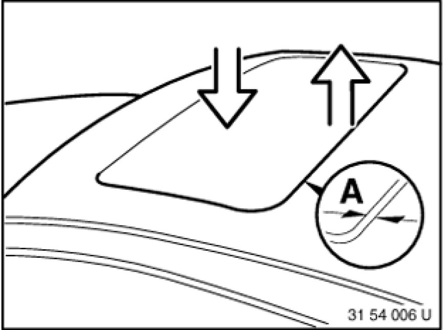
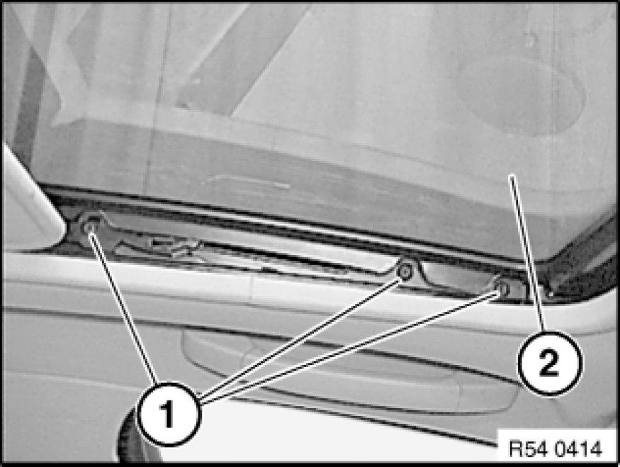
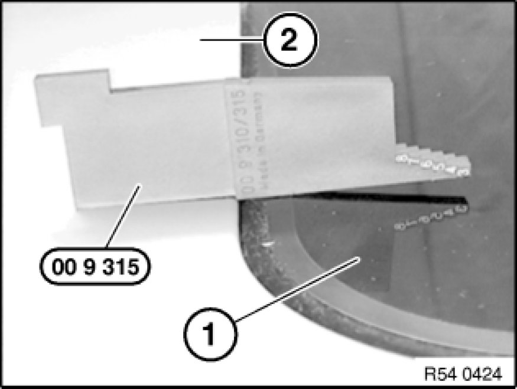

Sunroof / Moonroof: Adjustments
54 12 003 - Adjusting glass slide/tilt sunroof lid

Special tools required:

Necessary preliminary tasks:
- Remove gaiter 54 12 015 Replacing Left or Right Gaiter For Glass Slide/Tilt Sunroof

Ideal adjustment:
- Distance:
- Distance A from glass slide/tilt sunroof lid (1) to roof (2) must be the same all round
- A = all round 6.0 ± 0.5 mm
- Height:
- Front - flush to 0.75 mm deeper
- Rear - flush to 1.5 mm higher

Loosen left and right bolts (1).
Note:
To adjust, slacken screws (1) on left/right so that glass slide/tilt sunroof lid (2) can still just be adjusted.
Tightening torque: 54 12 01AZ 54 12 Mechanical Components of Sun Roof.

Height adjustment:
Check height of glass slide/tilt sunroof lid (1) to roof (2) with special tool 00 9 315.
Push glass slide/tilt sunroof lid upwards or downwards until ideal setting is reached.
Distance adjustment:
Check distance between seal and roof (2) with special tool 00 9 341.
It must be possible to slide the special tool against the same level of resistance.
Slide glass slide/tilt sunroof lid towards front/rear until ideal position is obtained.

Check function and adjustment.
Initialize Testing and Inspection glass slide/tilt sunroof.